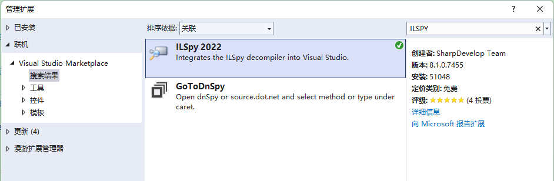
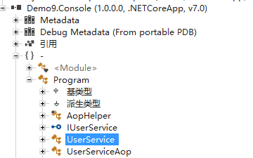
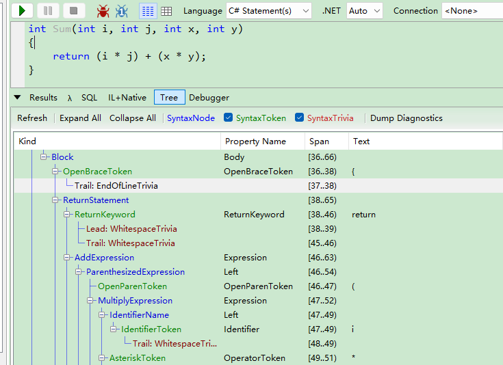
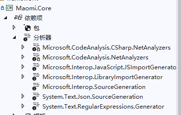

动态代码
C# 中实现动态代码的方式有很多，比如 反射、表达式树、EMIT、Roslyn、Source Generators 等，C# 各类框架中几乎都有动态代码技术的使用，比如依赖注入、对象关系映射、AOP 技术等。由于动态代码技术在 C# 中的使用场景非常广泛，因此在本章中，笔者将会介绍多种动态代码技术，以及完成部分实践，完成常见几种框架技术的编写方法。
阅读本章内容之前，需要读者熟练掌握反射技术，需要学习反射技术，可以参考笔者的在线电子书课程： https://reflect.whuanle.cn/
EMIT
EMIT 是一种使用 C# 编排生成 IL 代码的技术，IL 是 .NET 平台的中间语言，由于 IL 的高性能的特点，很多框架都使用 EMIT 技术动态生成代码，最广泛的使用是编写 AOP 框架。在本节中，笔者将会介绍 AOP 的实现原理，以及使用 EMIT 编写一个简单的 AOP 程序。
创建控制台项目，引入 CZGL.AOP 包，示例代码请参考 Demo.CZGLAOP 项目。
有以下接口和类型：
public interface ITest
{
void MyMethod();
}
public class Test : ITest
{
public virtual string A { get; set; }
public Test()
{
Console.WriteLine("构造函数没问题");
}
public virtual void MyMethod()
{
Console.WriteLine("运行中");
}
}
我们希望，在执行 MyMethod 方法时，能够在执行前后打印出日志，这时可以先编写一个特性类，继承 ActionAttribute ，实现 Before 和 After 接口。
public class LogAttribute : ActionAttribute
{
public override void Before(AspectContext context)
{
Console.WriteLine("--执行前--");
}
public override object After(AspectContext context)
{
Console.WriteLine("--执行后--");
if (context.IsMethod)
return context.MethodResult;
else if (context.IsProperty)
return context.PropertyValue;
return null;
}
}
然后改造 Test 类型。
[Interceptor]
public class Test : ITest
{
[Log]
public virtual string A { get; set; }
public Test()
{
Console.WriteLine("构造函数");
}
[Log]
public virtual void MyMethod()
{
Console.WriteLine("运行中");
}
}
然后创建 AOP 类型：
ITest test1 = AopInterceptor.CreateProxyOfInterface<ITest, Test>();
test1.MyMethod();
Test test2 = AopInterceptor.CreateProxyOfClass<Test>();
test2.MyMethod();
运行项目，会输出：
构造函数
--执行前--
运行中
--执行后--
构造函数
--执行前--
运行中
AOP 实现原理
AOP(Aspect-oriented Programming) 即面向切片编程，在 C# 中有动态 AOP 和静态 AOP 两种，如果是在程序启动后生成的，为动态 AOP，这类框架有 Castle 、AspectCore 等，它们都使用了 EMIT 技术，在代码编译时即生成的，为静态 AOP，这类框架有 Fody 等。
实现 AOP 的前提
请看如下所示的代码，当调用 Voice() 方法时，请思考控制台会打印什么内容。
public class Program
{
static void Main()
{
Animal c = new Cat();
Console.WriteLine(c.Voice());
}
public abstract class Animal
{
public string Voice() => "null";
}
public class Cat: Animal
{
public new string Voice() => "喵";
}
}
如果你有运行代码，会发现打印结果是 null，虽然 c 是 Cat 类型，但是这里我们使用的是 Animal 类型，CLR 首先判断 Voice 方法是否为抽象方法或虚方法，如果不是则直接调用，不会往子类中查找。
我们使用工具查看Animal 中 Voice 方法的 IL 代码：
// Methods
.method public hidebysig
instance string Voice () cil managed
那么，同样的代码，在 java 中，又会发生什么呢？
public class Main {
public static void main(String[] args) {
Animal animal = new Cat();
System.out.println(animal.Voice());
}
}
class Animal{
public String Voice(){
return "null";
}
}
class Cat extends Animal{
public String Voice(){
return "喵";
}
}
运行这段代码后会发现，打印出来的是 喵。因为 java 中的方法默认是虚方法，而 C# 中的 方法需要加上关键字 virtual 才是虚方法。
为了能够在使用父类方法时，执行的是子类的代码，我们需要将代码改成：
public abstract class Animal
{
public virtual string Voice() => "null";
}
public class Cat : Animal
{
public override string Voice() => "喵";
}
// Methods
.method public hidebysig newslot virtual
instance string Voice () cil managed
那么，虚方法跟实现 AOP 有啥关系呢？其实，使用 EMIT 技术编写 AOP 框架的思路很简单，那就是继承，比如我们要给 A 类型的 A 方法实现 AOP，那么 A 方法就必须得是抽象方法或虚方法，然后我们通过 EMIT 技术生成一个类型 B 继承 A，然后创建 A 类型时实际上创建的是 B 类型。此时，调用 A 中的 A 方法，CLR 会执行 B 中的 A 方法。
A a = new B();
在使用 EMIT 技术实现 AOP 之前，我们可以通过容器依赖注入来领会 AOP 是如何通过继承实现的。
有个 UserService 服务，实现了登录过程。
public class UserService
{
public virtual bool Login(string name, string passeword)
{
return true;
}
}
然后我们使用一个新的类型重写 Login 方法，在执行方法之前和之后打印日志。
public class UserServiceAop : UserService
{
public override bool Login(string name, string passeword)
{
Console.WriteLine($"用户开始登录：{name}");
var result = base.Login(name, passeword);
Console.WriteLine($"用户 {name} 登录结果 {result}");
return result;
}
}
然后通过注入服务实现 AOP：
IServiceCollection ioc = new ServiceCollection();
ioc.AddScoped<UserService, UserServiceAop>();
var services = ioc.BuildServiceProvider();
var userService = services.GetRequiredService<UserService>();
userService.Login("工良", "123456");
如果需要 AOP 的是接口，那就更加简单，我们只需要生成一个继承接口的类型即可，完全不需要继承父类，而父类也不需要标记为虚方法或抽象方法。
public interface IUserService
{
bool Login(string name, string passeword);
}
public class UserService : IUserService
{
public bool Login(string name, string passeword)
{
return true;
}
}
public class UserServiceAop : IUserService
{
private readonly UserService _service;
public UserServiceAop()
{
_service = new UserService();
}
public bool Login(string name, string passeword)
{
Console.WriteLine($"用户开始登录：{name}");
var result = _service.Login(name, passeword);
Console.WriteLine($"用户 {name} 登录结果 {result}");
return result;
}
}
IServiceCollection ioc = new ServiceCollection();
ioc.AddScoped<IUserService, UserServiceAop>();
var services = ioc.BuildServiceProvider();
var userService = services.GetRequiredService<IUserService>();
userService.Login("工良", "123456");
实际上，接口方法本身就是抽象方法，所以因此无需处理接口即可直接使用 AOP 生成代理类型。
// Methods
.method public hidebysig newslot abstract virtual
instance bool Login (
string name,
string passeword
) cil managed
{
} // end of method IUserService::Login
通过这个例子你应该可以领会到使用 EMIT 技术实现 AOP ，最基础最本质的是实现一个新的类型基础父类或接口。由于 AOP 的类型是动态生成的，我们在开发是无法创建，所以 AOP 一般需要结合 IOC 使用，我们可以拦截容器中的 <IUserService, UserService>，替换成 <IUserService, UserServiceAop>。或者提供一个工厂服务，用于获取 AOP 后的对象。
EMIT 实现 AOP
本节代码可以在 Demo8.Console、Demo8.FxConsole 中查看。
ILSpy 是一个反编译工具，能够帮助我们查看代码生成的 IL，这样一来，即使我们对 IL 不熟悉，也可以通过编译好的 IL 代码中抄过来。
在 Visual Studio 中 安装扩展 ILSpy ，安装或手动下载(https://github.com/icsharpcode/ILSpy)。

创建一个项目，然后创建接口和类型。
public interface IUserService
{
bool Login(string name, string passeword);
}
public class UserService : IUserService
{
public bool Login(string name, string passeword)
{
return true;
}
}
public class UserServiceAop : IUserService
{
private readonly UserService _service;
public UserServiceAop()
{
_service = new UserService();
}
public bool Login(string name, string passeword)
{
Console.WriteLine($"用户开始登录：{name}");
var result = _service.Login(name, passeword);
Console.WriteLine($"用户 {name} 登录结果 {result}");
return result;
}
}
然后编译项目生成 dll 文件，将 Demo8.Console.dll 拖动放到 ILSpy 中，你可以查看到 UserServiceAop 的全部 IL 代码，我们只需要抄即可！

接下来，我们开始使用 EMIT 技术，动态生成一个 UserServiceAop 类型。
首先是动态构建程序集并创建一个新的类型。
public static Assembly Build()
{
// 构建运行时程序集
AssemblyName assemblyName = new AssemblyName("AopTmp");
assemblyName.SetPublicKeyToken(new Guid().ToByteArray());
AssemblyBuilder assBuilder = AssemblyBuilder.DefineDynamicAssembly(assemblyName, AssemblyBuilderAccess.RunAndCollect);
// 构建模块
ModuleBuilder moduleBuilder = assBuilder.DefineDynamicModule(assemblyName.Name);
/// 构建类型，命名空间+类名
TypeBuilder typeBuilder = moduleBuilder.DefineType("Aop.UserServiceAop",
TypeAttributes.Public, parent: null, interfaces: typeof(UserService).GetInterfaces());
// 构建字段
// field private initonly class Program/UserService _service
var fieldBuilder = typeBuilder.DefineField("_service", typeof(UserService), FieldAttributes.Private | FieldAttributes.InitOnly);
BuildCtor(typeBuilder, fieldBuilder);
BuildMethod(typeBuilder, fieldBuilder);
var type = typeBuilder.CreateType();
return assBuilder;
}
创建类型后，首先给类型添加构造函数。
private static void BuildCtor(TypeBuilder typeBuilder, FieldBuilder fieldBuilder)
{
// 构造函数
// .method public hidebysig specialname rtspecialname
var ctorBuilder = typeBuilder.DefineConstructor(MethodAttributes.Public,
CallingConventions.Standard,
Type.EmptyTypes);
var il = ctorBuilder.GetILGenerator();
// _service = new UserService();
il.Emit(OpCodes.Ldarg_0);
il.Emit(OpCodes.Newobj, typeof(UserService).GetConstructors()[0]);
il.Emit(OpCodes.Stfld, fieldBuilder);
il.Emit(OpCodes.Ret);
}
然后生成 Login 方法。
private static void BuildMethod(TypeBuilder typeBuilder, FieldBuilder fieldBuilder)
{
var baseMethod = typeof(UserService).GetMethod("Login");
// .method public final hidebysig newslot virtual
var methodBuilder = typeBuilder.DefineMethod(baseMethod.Name,
baseMethod.Attributes,
baseMethod.CallingConvention,
// 返回值和参数
baseMethod.ReturnType, baseMethod.GetParameters().Select(x => x.ParameterType).ToArray());
var sType = typeof(DefaultInterpolatedStringHandler);
ILGenerator il = methodBuilder.GetILGenerator();
// 定义本地变量
il.DeclareLocal(typeof(bool));
il.DeclareLocal(sType);
// Console.WriteLine("用户开始登录：" + name);
il.Emit(OpCodes.Ldstr, "用户开始登录: ");
il.Emit(OpCodes.Ldarg_1);
il.Emit(OpCodes.Call, typeof(String).GetMethod("Concat", new Type[] { typeof(string), typeof(string) }));
il.Emit(OpCodes.Call, typeof(Console).GetMethod("WriteLine", new Type[] { typeof(string) }));
// bool result = _service.Login(name, passeword);
il.Emit(OpCodes.Ldarg_0);
il.Emit(OpCodes.Ldfld, fieldBuilder);
il.Emit(OpCodes.Ldarg_1);
il.Emit(OpCodes.Ldarg_2);
il.Emit(OpCodes.Callvirt, baseMethod);
il.Emit(OpCodes.Stloc_0);
// Console.WriteLine($"用户 {name} 登录结果 {result}");
// DefaultInterpolatedStringHandler defaultInterpolatedStringHandler = new DefaultInterpolatedStringHandler(9, 2);
il.Emit(OpCodes.Ldloca_S, 1);
il.Emit(OpCodes.Ldc_I4_S, 9);
il.Emit(OpCodes.Ldc_I4_2);
il.Emit(OpCodes.Call, sType.GetConstructor(new Type[] { typeof(int), typeof(int) }));
// defaultInterpolatedStringHandler.AppendLiteral("用户 ");
il.Emit(OpCodes.Ldloca_S, 1);
il.Emit(OpCodes.Ldstr, "用户: ");
il.Emit(OpCodes.Call, sType.GetMethod("AppendLiteral", new Type[] { typeof(string) }));
// defaultInterpolatedStringHandler.AppendFormatted(name);
il.Emit(OpCodes.Ldloca_S, 1);
il.Emit(OpCodes.Ldarg_1);
il.Emit(OpCodes.Call, sType.GetMethod("AppendFormatted", new Type[] { typeof(string) }));
// defaultInterpolatedStringHandler.AppendLiteral(" 登录结果 ");
il.Emit(OpCodes.Ldloca_S, 1);
il.Emit(OpCodes.Ldstr, " ,登录结果: ");
il.Emit(OpCodes.Call, sType.GetMethod("AppendLiteral", new Type[] { typeof(string) }));
// defaultInterpolatedStringHandler.AppendFormatted(result); AppendFormatted<bool>(result)
il.Emit(OpCodes.Ldloca_S, 1);
il.Emit(OpCodes.Ldloc_0);
il.Emit(OpCodes.Call, sType.GetMethods()
.FirstOrDefault(x => x.Name == "AppendFormatted" && x.IsGenericMethod && x.GetParameters().Length == 1).MakeGenericMethod(typeof(bool)));
// Console.WriteLine(defaultInterpolatedStringHandler.ToStringAndClear());
il.Emit(OpCodes.Ldloca_S, 1);
il.Emit(OpCodes.Call, sType.GetMethod("ToStringAndClear", Type.EmptyTypes));
il.Emit(OpCodes.Call, typeof(Console).GetMethod("WriteLine", new Type[] { typeof(string) }));
// return result;
il.Emit(OpCodes.Ldloc_0);
il.Emit(OpCodes.Ret);
}
最后通过依赖注入添加服务：
static void Main()
{
var assembly = AopHelper.Build();
var newType = assembly.GetType("Aop.UserServiceAop");
IServiceCollection ioc = new ServiceCollection();
ioc.Add(new ServiceDescriptor(typeof(IUserService), newType, ServiceLifetime.Scoped));
var services = ioc.BuildServiceProvider();
var userService = services.GetRequiredService<IUserService>();
userService.Login("工良", "123456");
}
到目前为止，我们已经介绍了如何使用 EMIT 动态生成一个新的类型，我们的例子仅仅是针对 IUserService 生成一个 UserServiceAop 类型，。
表达式树
表达式树的应用很广泛，表达式树的使用方法主要分为两种情况，生成动态代码执行，比如延迟查询、yeild return，第二种是解析表达式，比如编写 ORM 框架。
表达式树生成
笔者写过表达式树系列的教程，欢迎阅读 https://ex.whuanle.cn/
表达式树是程序运行时动态生成代码的一种方法，通过定义各种表达式来组合代码逻辑，最后编译执行。
在第八章中，编写事件总线方法时，我们就使用了表达式树组装方法，以便将不同形式的方法统一起来。
比如，有以下代码。
int Sum(int i, int j, int x, int y)
{
return (i * j) + (x * y);
}
如果我们需要使用表达式树的形式编写该逻辑，示例代码如下：
ParameterExpression a = Expression.Parameter(typeof(int), "i");
ParameterExpression b = Expression.Parameter(typeof(int), "j");
Expression r1 = Expression.Multiply(a, b); //乘法运行
ParameterExpression c = Expression.Parameter(typeof(int), "x");
ParameterExpression d = Expression.Parameter(typeof(int), "y");
Expression r2 = Expression.Multiply(c, d); //乘法运行
Expression result = Expression.Add(r1, r2); //相加
为了使用表达式树表示代码，需要将表达式树做得很复杂，需要表达常量变量，逻辑运算、条件控制、循环控制等等，还要访问变量的字段、属性、方法等。
笔者将表达式树的学习分为以下部分：
- 变量、常量、赋值
- 运算符
- 条件控制
- 循环控制
- 对象、泛型、集合和实例化
- 访问对象成员，字段、属性、函数
表达式树主要分为三个逻辑，其中最重要的是组合表达式树，然后是编译、执行。
由于表达式树的本身很复杂，因此，本书只是简单介绍表达式树如何使用，以及使用场景，只需要掌握简单的表达式树编写即可，以便理解后面的表达式树如何进行解析。
如果我们碰到需要编写表达式树的场景，我们可以像编写 AOP 一样，首先简化 C# 代码，然后借助工具先查出这段 C# 代码生成的表达式树的大概写法，然后再借鉴这些表达式树到项目当中。
比如，我们可以使用 LinqPad ，首先将需要生成表达式树的代码放到编辑器中，然后查看该代码对应的表达式树。

变量常量和赋值
在 C# 中，变量分为以下几种类型：
- 值类型（Value types）
- 引用类型（Reference types）
- 指针类型（Pointer types）
一般上，只用到值类型和引用类型，这里不会说到指针类型。
创建一个变量：
ParameterExpression varA = Expression.Variable(typeof(int), "x");
创建一个函数参数：
ParameterExpression varB = Expression.Parameter(typeof(int), "y");
创建一个常量：
ConstantExpression constant = Expression.Constant(100);
ConstantExpression constant1 = Expression.Constant(100, typeof(int));
逻辑运算
在 C# 中，算术运算符，有以下类型
- 算术运算符
- 关系运算符
- 逻辑运算符
- 位运算符
- 赋值运算符
- 其他运算符
由于 C# 中的运算符非常多，笔者就不一一介绍了，推荐读者阅读 https://ex.whuanle.cn/4.operator.html
比如，要将两个 int 类型的变量相加或相减，可以使用 Expression.Add 和 Expression.Subtract。
ParameterExpression a = Expression.Parameter(typeof(int), "a");
ParameterExpression b = Expression.Parameter(typeof(int), "b");
// = a + b
BinaryExpression ab = Expression.Add(a, b);
// = a - b
BinaryExpression ab = Expression.Subtract(a, b);
调用方法
Expression.Call 是表达式树种调用类型方法的接口，其定义如下：
static MethodCallExpression Call(Expression? instance, MethodInfo method, params Expression[]? arguments)
有如下 C# 代码：
int a = 100;
int b = 200;
var ab = a + b;
Console.WriteLine(ab);
使用表达式树调用 Console.WriteLine() 静态方法打印信息：
ParameterExpression a = Expression.Parameter(typeof(int), "a");
ParameterExpression b = Expression.Parameter(typeof(int), "b");
// ab = a + b
BinaryExpression ab = Expression.Add(a, b);
// 打印 a + b 的值
MethodCallExpression method = Expression.Call(null, typeof(Console).GetMethod("WriteLine", new Type[] { typeof(int) }), ab);
Expression.Call 也可以调用实例的方法：
public class Test
{
public void Print(string info)
{
Console.WriteLine(info);
}
}
Test test = new Test();
test.Print("打印出来");
// Test test
ParameterExpression test = Expression.Variable(typeof(Test), "test");
// test.Print("打印出来");
MethodCallExpression method = Expression.Call(
test,
typeof(Test).GetMethod("Print", new Type[] { typeof(string) }),
Expression.Constant("打印出来")
);
// 编译生成并执行
Expression<Action<Test>> lambda = Expression.Lambda<Action<Test>>(method, test);
lambda.Compile()(new Test());
编写对象映射框架
示例代码请参考 Demo8.Mapper 项目。
// 利用泛型缓存，提升访问速度，以及简化缓存结构
public static class TypeMembers<TTarget>
where TTarget : class
{
private static readonly MemberInfo[] MemberInfos;
public static MemberInfo[] Members => MemberInfos;
static TypeMembers()
{
MemberInfos = typeof(TTarget)
.GetMembers(BindingFlags.Instance | BindingFlags.Public | BindingFlags.NonPublic)
.Where(x => (x is FieldInfo) || (x is PropertyInfo)).ToArray();
}
}
public class MapperBuilder<TSource, TTarget>
where TSource : class
where TTarget : class, new()
{
// 生成的值映射委托
private Delegate? MapDelegate;
// 缓存用户自定义映射委托
private readonly Dictionary<MemberInfo, Delegate> MapExpressions = new();
}
var builder = new MapperBuilder<A, B>();
public class A
{
public string C { get; set; }
public int D { get; set; }
}
public class B
{
public string C { get; set; }
public string D { get; set; }
}
// b.D = a.D.ToString()
builder.Set(a => a.D.ToString(), b => b.D);
// 构建关系映射
builder.Build();
// 单独设置表达式赋值
public MapperBuilder<TSource, TTarget> Set<TValue, TField>(Func<TSource, TValue> buildValue,
Expression<Func<TTarget, TField>> targetField)
{
MemberInfo p = GetMember(targetField);
MapExpressions[p] = buildValue;
return this;
}
// 从表达式中识别出对象的成员名称。
// 如 (a => a.Value) ，解析出 Value
private MemberInfo GetMember<TField>(Expression<Func<TTarget, TField>> field)
{
var body = field.Body;
string name = "";
// 提取 (a=> a.Value)
if (body is MemberExpression memberExpression)
{
MemberInfo member = memberExpression.Member;
name = member.Name;
}
// 提取 (a=> a.Value)
else if (body is ParameterExpression parameterExpression)
{
name = parameterExpression.Name ?? "-";
}
// 提取 (a=> "Value") 字符串表达式
else if (body is ConstantExpression constantExpression)
{
name = constantExpression.Value?.ToString() ?? "-";
}
else
{
throw new KeyNotFoundException($"{typeof(TTarget).Name} 中不存在名为 {body.ToString()} 的字段或属性，请检查表达式！");
}
var p = TypeMembers<TTarget>.Members.FirstOrDefault(x => x.Name == name);
if (p == null)
{
throw new KeyNotFoundException($"{typeof(TTarget).Name} 中不存在名为 {body.ToString()} 的字段或属性，请检查表达式！");
}
return p;
}
// 构建对象映射
public void Build()
{
List<Expression> exList = new List<Expression>();
// TSource a;
// TTarget b;
ParameterExpression sourceParameter = Expression.Parameter(typeof(TSource), "_a");
ParameterExpression targetParameter = Expression.Parameter(typeof(TTarget), "_b");
foreach (var item in TypeMembers<TTarget>.Members)
{
// 如果用户设置了自定义赋值表达式
if (MapExpressions.TryGetValue(item, out var @delegate))
{
exList.Add(BuildAssign(sourceParameter, targetParameter, item, @delegate));
continue;
}
if (item is FieldInfo field)
{
// 忽略属性的私有字段
if (item.Name.EndsWith(">k__BackingField")) continue;
Expression assignDel = MapFieldOrProperty(sourceParameter, targetParameter, field);
exList.Add(assignDel);
}
else if (item is PropertyInfo property)
{
if (!property.CanWrite) continue;
Expression assignDel = MapFieldOrProperty(sourceParameter, targetParameter, property);
exList.Add(assignDel);
}
}
var block = Expression.Block(exList);
var del = Expression.Lambda(block, sourceParameter, targetParameter).Compile();
MapDelegate = del;
}
// 构建映射表达式
private Expression BuildAssign(ParameterExpression sourceParameter, ParameterExpression targetParameter, MemberInfo memberInfo, Delegate @delegate)
{
// b.Value
MemberExpression targetMember;
if (memberInfo is FieldInfo field)
{
targetMember = Expression.Field(targetParameter, field);
}
else if (memberInfo is PropertyInfo property)
{
targetMember = Expression.Property(targetParameter, property);
}
else
{
throw new InvalidCastException($"{memberInfo.DeclaringType?.Name}.{memberInfo.Name} 不是字段或属性");
}
// 调用用户自定义委托
var instance = Expression.Constant(@delegate.Target);
MethodCallExpression delegateCall = Expression.Call(instance, @delegate.Method, sourceParameter);
// b.Value = @delegate.DynamicInvoke(a);
BinaryExpression assign = Expression.Assign(targetMember, delegateCall);
return assign;
}
// 默认字段映射规则，根据同名字段或属性赋值
private Expression MapFieldOrProperty(ParameterExpression sourceParameter, ParameterExpression targetParameter, MemberInfo targetField)
{
// b.Value
MemberExpression targetMember;
Type targetFieldType;
{
if (targetField is FieldInfo fieldInfo)
{
targetFieldType = fieldInfo.FieldType;
targetMember = Expression.Field(targetParameter, fieldInfo);
}
else if (targetField is PropertyInfo propertyInfo)
{
targetFieldType = propertyInfo.PropertyType;
targetMember = Expression.Property(targetParameter, propertyInfo);
}
else
{
throw new InvalidCastException(
$"框架处理出错，请提交 Issue！ {typeof(TTarget).Name}.{targetField.Name} 既不是字段也不是属性");
}
}
var sourceField = typeof(TSource).GetMember(targetField.Name, BindingFlags.Instance | BindingFlags.Public | BindingFlags.NonPublic).FirstOrDefault();
// 在 TSource 中搜索不到对应字段时，b.Value 使用默认值
if (sourceField == null)
{
// 生成表达式 b.Value = default;
return Expression.Assign(targetMember, Expression.Default(targetFieldType));
}
MemberExpression sourceMember;
Type sourceFieldType;
{
if (sourceField is FieldInfo fieldInfo)
{
sourceFieldType = fieldInfo.FieldType;
sourceMember = Expression.Field(sourceParameter, fieldInfo);
}
else if (sourceField is PropertyInfo propertyInfo)
{
sourceFieldType = propertyInfo.PropertyType;
sourceMember = Expression.Property(sourceParameter, propertyInfo);
}
else
{
throw new InvalidCastException(
$"框架处理出错，请提交 Issue！ {typeof(TSource).Name}.{sourceField.Name} 既不是字段也不是属性");
}
}
if (targetFieldType != sourceFieldType)
throw new InvalidCastException(
$"类型不一致！ {typeof(TSource).Name}.{sourceField.Name} 与 {typeof(TTarget).Name}.{targetField.Name}");
// 生成表达式 b.Value = a.Value
return Expression.Assign(targetMember, sourceMember);
}
完整使用示例：
var builder = new MapperBuilder<A, B>();
// c.D = a.D.ToString()
builder.Set(a => a.D.ToString(), b => b.D);
builder.Build();
A a = new A()
{
C = "C",
D = 123
};
var b = builder.Map(a);
表达式树解析
日常业务开发少不了 ORM 框架，ORM 框架为我们的操作数据库代理了极大的便利，ORM 中也大量使用了表达式树技术，不过跟动态生成代码截然相反，ORM 使用的是解析表达式树。
本节讲解如何使用表达式树完成一个简单的 ORM 框架，示例代码请参考 Demo8.ORM 项目。
请在 mysql 数据库中执行以下 SQL，以便创建和插入表数据：
CREATE TABLE `Test` (
`Id` int NOT NULL,
`Name` varchar(255) CHARACTER SET utf8mb4 COLLATE utf8mb4_0900_ai_ci NULL DEFAULT NULL,
PRIMARY KEY (`Id`) USING BTREE
) ENGINE = InnoDB CHARACTER SET = utf8mb4 COLLATE = utf8mb4_0900_ai_ci ROW_FORMAT = Dynamic;
INSERT INTO `Test` VALUES (1, '工良');
INSERT INTO `Test` VALUES (2, '工良');
INSERT INTO `Test` VALUES (3, '工良');
INSERT INTO `Test` VALUES (4, '工良');
为了让示例项目更简单，该 ORM 只包含简单的查询功能。
使用示例：
var context = new MyDBContext(connction);
var list = await context.Select<Test>()
.Where(x => x.Id >= 2 && x.Name.Contains("工良") && x.Id < 4)
.ToListAsync();
创建上下文类型 MyDBContext ：
public class MyDBContext
{
protected readonly IDbConnection _connction;
public MyDBContext(IDbConnection connction)
{
_connction = connction;
}
public MyDBContext<T> Select<T>() where T : class, new()
{
return new MyDBContext<T>(_connction);
}
}
泛型 MyDBContext<T> 用于构造和生成 SQL 语句：
public class MyDBContext<T> : MyDBContext
where T : class, new()
{
public MyDBContext(IDbConnection connction) : base(connction)
{
}
private readonly StringBuilder _strBuilder = new StringBuilder();
public MyDBContext<T> Where(Expression<Func<T, bool>> predicate)
{
var bin = predicate.Body as BinaryExpression;
ArgumentNullException.ThrowIfNull(bin);
var content = $"{Parse(bin.Left)} {GetChar(bin.NodeType)} {Parse(bin.Right)}";
_strBuilder.Append(content);
return this;
}
// 解析条件
private static string Parse(Expression ex)
{
if (ex is BinaryExpression bin)
{
ArgumentNullException.ThrowIfNull(bin);
var left = bin.Left;
var right = bin.Right;
var content = $"{Parse(bin.Left)} {GetChar(bin.NodeType)} {Parse(bin.Right)}";
return content;
}
else if (ex is MemberExpression p)
{
var name = $"`{p.Member.Name}`";
return name;
}
else if (ex is ConstantExpression c)
{
var obj = c.Value;
if (obj == null) return "null";
var typeCode = TypeInfo.GetTypeCode(obj.GetType());
if (typeCode == TypeCode.String) return $"'{obj.ToString()}'";
return obj.ToString();
}
else if (ex is MethodCallExpression m)
{
if (m.Method.Name == "Contains")
{
return $"{Parse(m.Object)} like '%{Parse(m.Arguments.FirstOrDefault()).Trim('\'')}%'";
}
}
throw new InvalidOperationException("不支持的表达式");
}
// 解析连接符
private static string GetChar(ExpressionType type)
{
switch (type)
{
case ExpressionType.And: return "&";
case ExpressionType.AndAlso: return "&&";
case ExpressionType.Or: return "|";
case ExpressionType.OrElse: return "||";
case ExpressionType.Equal: return "=";
case ExpressionType.NotEqual: return "!=";
case ExpressionType.GreaterThan: return ">";
case ExpressionType.GreaterThanOrEqual: return ">=";
case ExpressionType.LessThan: return "<";
case ExpressionType.LessThanOrEqual: return "<=";
}
throw new InvalidOperationException("不支持的表达式");
}
public async Task<List<T>> ToListAsync()
{
var sql = $"SELECT * FROM {typeof(T).Name} Where {_strBuilder.ToString()}";
_connction.Open();
var command = new MySqlCommand();
command.Connection = _connction as MySqlConnection;
command.CommandText = sql;
var reader = await command.ExecuteReaderAsync();
List<T> list = new List<T>();
var ps = typeof(T).GetProperties();
while (await reader.ReadAsync())
{
T t = new T();
list.Add(t);
for (int i = 0; i < ps.Length; i++)
{
var p = ps[i];
object v = null;
// 只处理一些简单的数据库类型
switch (TypeInfo.GetTypeCode(p.PropertyType))
{
case TypeCode.Int32: v = reader.GetInt32(i); break;
case TypeCode.Int64: v = reader.GetInt64(i); break;
case TypeCode.Double: v = reader.GetDouble(i); break;
case TypeCode.String: v = reader.GetString(i); break;
default: v = null; break;
}
p.SetValue(t, v);
}
}
return list;
}
public async Task<T> FirstAsync()
{
return (await ToListAsync()).FirstOrDefault();
}
}
通过 nuget 包引入 MySqlConnector，通过 MyDBContext 查询从数据库查询数据。
public class Test
{
public int Id { get; set; }
public string Name { get; set; }
}
public class Program
{
static async Task Main()
{
var builder = new MySqlConnectionStringBuilder
{
Server = "localhost:3306",
Database = "test",
UserID = "root",
Password = "123456",
SslMode = MySqlSslMode.Required,
};
IDbConnection connction = new MySqlConnection(builder.ConnectionString);
var context = new MyDBContext(connction);
var list = await context.Select<Test>()
.Where(x => x.Id >= 2 && x.Name.Contains("工良") && x.Id < 4)
.ToListAsync();
}
}
Roslyn
Roslyn 是一种用来编译代码和分析代码的技术，主要有两种使用方式，一种是动态编译代码，与 EMIT 技术不同的是， Roslyn 可以直接编译字符串代码，也可以编译完整的项目代码，而不需要 .NET SDK 或 MSBuild，国内有开发者利用 Natasha 技术编写了 Natasha 框架。另一种使用方式是作为代码分析器，使用非常广泛，.NET 5 以后的版本都自带了代码分析器，我们在 IDE 中可以看到。

在后面的章节中笔者会使用介绍如何编写一个代码分析器，所以在本章中，笔者只介绍如何使用 Roslyn 编译代码。
使用 Roslyn
示例代码请参考 Demo8.Roslyn 项目。
首先通过 nuget 引入 Microsoft.CodeAnalysis.CSharp 包。
创建一个 DomainOptions 类型，用来存储编译程序集时的配置。
public class DomainOptions
{
// 当前要编译的程序集是何种类型的项目
public OutputKind OutputKind { get; set; } = OutputKind.DynamicallyLinkedLibrary;
// Debug 还是 Release
public OptimizationLevel OptimizationLevel { get; set; } = OptimizationLevel.Release;
// 是否允许使用不安全代码
public bool AllowUnsafe { get; set; } = false;
// 生成目标平台，如 X64、x86
public Platform Platform { get; set; } = Platform.AnyCpu;
// 是否检查边界
public bool CheckOverflow { get; set; } = false;
// 语言版本
public LanguageVersion LanguageVersion { get; set; } = LanguageVersion.CSharp7_3;
// 环境变量
public HashSet<string> Environments { get; } = new HashSet<string>();
}
然后创建一个构造器，用来构造 DomainOptions 类型。
// 程序集编译配置构建器
public class DomainOptionBuilder
{
private readonly DomainOptions _option = new DomainOptions();
internal LanguageVersion LanguageVersion => _option.LanguageVersion;
internal string[] Environments => _option.Environments.ToArray();
internal CSharpCompilationOptions Build()
{
if (_option.Environments.Count == 0)
{
_option.Environments.Add(_option.OptimizationLevel == OptimizationLevel.Debug ? "DEBUG" : "RESEALE");
}
return new CSharpCompilationOptions(
concurrentBuild: true,
metadataImportOptions: MetadataImportOptions.All,
outputKind: _option.OutputKind,
optimizationLevel: _option.OptimizationLevel,
allowUnsafe: _option.AllowUnsafe,
platform: _option.Platform,
checkOverflow: _option.CheckOverflow,
assemblyIdentityComparer: DesktopAssemblyIdentityComparer.Default);
}
// 程序集要编译成何种项目，比如控制台、桌面程序等，默认编译成动态库。
public DomainOptionBuilder WithKind(OutputKind kind = OutputKind.DynamicallyLinkedLibrary)
{
_option.OutputKind = kind;
return this;
}
// 配置程序集是否使用 DEBUG 条件编译，默认使用 RELEASE 编译程序
public DomainOptionBuilder WithDebug(bool isDebug = false)
{
_option.OptimizationLevel = isDebug ? OptimizationLevel.Debug : OptimizationLevel.Release;
return this;
}
// 是否允许项目使用不安全代码
public DomainOptionBuilder WIthAllowUnsafe(bool isAllow = false)
{
_option.AllowUnsafe = isAllow;
return this;
}
// 指定公共语言运行库（CLR）的哪个版本可以运行程序集，默认为可移植的
public DomainOptionBuilder WithPlatform(Platform platform = Platform.AnyCpu)
{
_option.Platform = platform;
return this;
}
// 是否在默认情况下强制执行整数算术的边界检查
public DomainOptionBuilder WithCheckOverflow(bool checkOverflow = false)
{
_option.CheckOverflow = checkOverflow;
return this;
}
// 要使用的语言版本，<para>如果直接通过代码生成，代码版本任意；如果通过 API 生成，目前项目的语法只考虑到 7.3
public DomainOptionBuilder WithLanguageVersion(LanguageVersion version = LanguageVersion.CSharp7_3)
{
_option.LanguageVersion = version;
return this;
}
// 编译条件字符串，#if 中使用到的条件编译，如 Debug 这些符号
public DomainOptionBuilder WithEnvironment(params string[] environment)
{
foreach (var item in environment)
{
_option.Environments.Add(item);
}
return this;
}
}
最后，编写一个编译器，用来编译代码成程序集。
// 程序集编译构建器
public class CompilationBuilder
{
/// 通过代码生成程序集
// code: 字符串代码
// assemblyPath: 程序集路径
// assemblyName: 程序集名称
// option: 程序集配置
// messages: 编译时的消息
public static bool CreateDomain(string code,
string assemblyPath,
string assemblyName,
DomainOptionBuilder option,
out ImmutableArray<Diagnostic> messages)
{
HashSet<PortableExecutableReference> references = new HashSet<PortableExecutableReference>();
// 设置依赖的程序集列表，这里使用跟 Demo8.Roslyn 一样的依赖
// 读者可以根据自己的需求添加
var refAssemblys = AppDomain.CurrentDomain.GetAssemblies()
.Where(i => !i.IsDynamic && !string.IsNullOrWhiteSpace(i.Location))
.Distinct()
.Select(i => MetadataReference.CreateFromFile(i.Location)).ToList();
foreach (var item in refAssemblys)
{
references.Add(item);
}
CSharpCompilationOptions options = (option ?? new DomainOptionBuilder()).Build();
var syntaxTree = ParseToSyntaxTree(code, option);
var result = BuildCompilation(assemblyPath, assemblyName, new SyntaxTree[] { syntaxTree }, references.ToArray(), options);
messages = result.Diagnostics;
return result.Success;
}
// 将代码转为语法树
[MethodImpl(MethodImplOptions.AggressiveInlining)]
private static SyntaxTree ParseToSyntaxTree(string code, DomainOptionBuilder option)
{
var parseOptions = new CSharpParseOptions(option.LanguageVersion, preprocessorSymbols: option.Environments);
return CSharpSyntaxTree.ParseText(code, parseOptions);
}
// 编译代码
// path： 程序集位置
// assemblyName: 程序集名称
// syntaxTrees: 代码语法树
// references: 依赖
// options: 编译配置
[MethodImpl(MethodImplOptions.AggressiveInlining)]
private static EmitResult BuildCompilation(
string path,
string assemblyName,
SyntaxTree[] syntaxTrees,
PortableExecutableReference[] references,
CSharpCompilationOptions options)
{
var compilation = CSharpCompilation.Create(assemblyName, syntaxTrees, references, options);
var result = compilation.Emit(Path.Combine(path, assemblyName));
return result;
}
}
然后在 Main 方法中，我们开始进行编译。
定义字符串代码：
const string code =
"""
using System;
namespace MySpace
{
public class Test
{
public int Sum(int a, int b)
{
return a + b;
}
}
}
""";
配置编译选项：
// 编译选项
// 编译选项可以不配置
DomainOptionBuilder option = new DomainOptionBuilder()
.WithPlatform(Platform.AnyCpu) // 生成可移植程序集
.WithDebug(false) // 使用 Release 编译
.WithKind(OutputKind.DynamicallyLinkedLibrary) // 生成动态库
.WithLanguageVersion(LanguageVersion.CSharp7_3); // 使用 C# 7.3
最后编译代码并获取编译结果：
// 编译代码
var isSuccess = CompilationBuilder.CreateDomain(code,
assemblyPath: "./",
assemblyName: "test.dll",
option: option,
out var messages);
检查编译结果以及动态调用程序集：
// 编译失败，输出错误信息
if (!isSuccess)
{
foreach (var item in messages)
{
Console.WriteLine(
$"""
ID:{item.Id}
严重程度:{item.Severity}
位置：{item.Location.SourceSpan.Start}~{item.Location.SourceSpan.End}
消息:{item.Descriptor.Title} {item}
""");
}
return;
}
// 编译成功，反射调用程序集代码
var curPath = Directory.GetParent(typeof(Program).Assembly.Location).FullName;
var assembly = Assembly.LoadFile($"{curPath}/test.dll");
var type = assembly.GetType("MySpace.Test");
var method = type.GetMethod("Sum");
object obj = Activator.CreateInstance(type);
int result = (int)method.Invoke(obj, new object[] { 1, 2 });
Console.WriteLine(result);
使用 Natasha
Natasha 开源项目地址：https://github.com/dotnetcore/Natasha
基于 Roslyn 的 C# 动态程序集构建库，该库允许开发者在运行时使用 C# 代码构建域 / 程序集 / 类 / 结构体 / 枚举 / 接口 / 方法等，使得程序在运行的时候可以增加新的模块及功能。Natasha 集成了域管理/插件管理，可以实现域隔离，域卸载，热拔插等功能。
示例项目在 Demo8.Natasha 中。
<Project Sdk="Microsoft.NET.Sdk">
<PropertyGroup>
<OutputType>Exe</OutputType>
<TargetFramework>net7.0</TargetFramework>
</PropertyGroup>
<ItemGroup>
<PackageReference Include="DotNetCore.Compile.Environment" Version="3.2.0" />
<PackageReference Include="DotNetCore.Natasha.CSharp" Version="5.2.2.1" />
</ItemGroup>
</Project>
static void Main()
{
const string code =
"""
using System;
namespace MySpace
{
public class Test
{
public int Sum(int a, int b)
{
return a + b;
}
}
}
""";
//初始化 Natasha 编译组件及环境
NatashaInitializer.Preheating();
//创建编译单元,并指定程序集名
AssemblyCSharpBuilder oop = new AssemblyCSharpBuilder("myAssembly");
//编译单元使用从域管理分配出来的随机域
oop.Domain = DomainManagement.Random();
//增加代码到编译单元中
oop.Add(code);
// 生成程序集
Assembly assembly = oop.GetAssembly();
var type = assembly.GetTypes().FirstOrDefault(x => x.Name == "Test");
var result = type.GetMethod("Sum", BindingFlags.Instance | BindingFlags.Public).Invoke(Activator.CreateInstance(type), new object[] { 1, 2 });
Console.Write(result);
}
Source Generators
Source Generators 是一种很复杂的技术，用于生成源代码，Source Generators 技术的基础是 Roslyn。
https://wengier.com/SourceGeneratorPlayground/
首先创建一个用于生成代码的项目，名为 Demo8.SGBuild，Demo8.SGBuild.csproj 文件内容如下所示：
<Project Sdk="Microsoft.NET.Sdk">
<PropertyGroup>
<TargetFramework>netstandard2.0</TargetFramework>
<LangVersion>11.0</LangVersion>
</PropertyGroup>
<ItemGroup>
<PackageReference Include="Microsoft.CodeAnalysis.CSharp" Version="4.5.0" PrivateAssets="all" />
<PackageReference Include="Microsoft.CodeAnalysis.Analyzers" Version="3.3.4" PrivateAssets="all" />
</ItemGroup>
</Project>
然后我们实现一个源代码生成器，在项目编译时，代码生成器会查找项目中 Main 方法所在的命名空间，然后生成一个 Test 类型存储在 MyAOP.cs 中，新生成的代码会随着项目一起编译。
[Generator]
public class MySourceGenerator : ISourceGenerator
{
public void Execute(GeneratorExecutionContext context)
{
// 查找 Main 方法
var mainMethod = context.Compilation.GetEntryPoint(context.CancellationToken);
// 生成新的代码
string source =
$"""
using System;
namespace {mainMethod.ContainingNamespace.ToDisplayString()}
{"{"}
public class Test : ITest
{"{"}
public int Sum(int a, int b)
{"{"}
return a + b;
{"}"}
{"}"}
{"}"}
""";
// 生成新的代码到文件
context.AddSource($"MyAOP.cs", source);
}
public void Initialize(GeneratorInitializationContext context)
{
}
}
然后我们再创建一个 Demo8.UseSG 项目，引用 Demo8.SGBuild 。
<ItemGroup>
<ProjectReference Include="..\Demo8.SGBuild\Demo8.SGBuild.csproj"
OutputItemType="Analyzer"
ReferenceOutputAssembly="false" />
</ItemGroup>
Demo8.UseSG 中的代码示例如下：
class Program
{
static void Main(string[] args)
{
var assembly = typeof(Program).Assembly;
var testType = assembly.GetTypes().FirstOrDefault(x => x.GetInterfaces().Any(i => i == typeof(ITest)));
var test = Activator.CreateInstance(testType) as ITest;
var sum = test.Sum(1, 2);
Console.WriteLine(sum);
}
}
public interface ITest
{
int Sum(int a, int b);
}